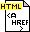

The Ptolemy 0.7.1 release includes the Appendix A in
$PTOLEMY/doc/html/install.
|
|
This page contains links to the most
recent version of Appendix A of the
Ptolemy User's
Manual. Appendix A contains
instructions on obtaining,
installing and troubleshooting
Ptolemy.
The Ptolemy 0.7.1 release includes the Appendix A in $PTOLEMY/doc/html/install.
|
|
 | Appendix A: Obtaining, Installing and Troubleshooting Ptolemy |